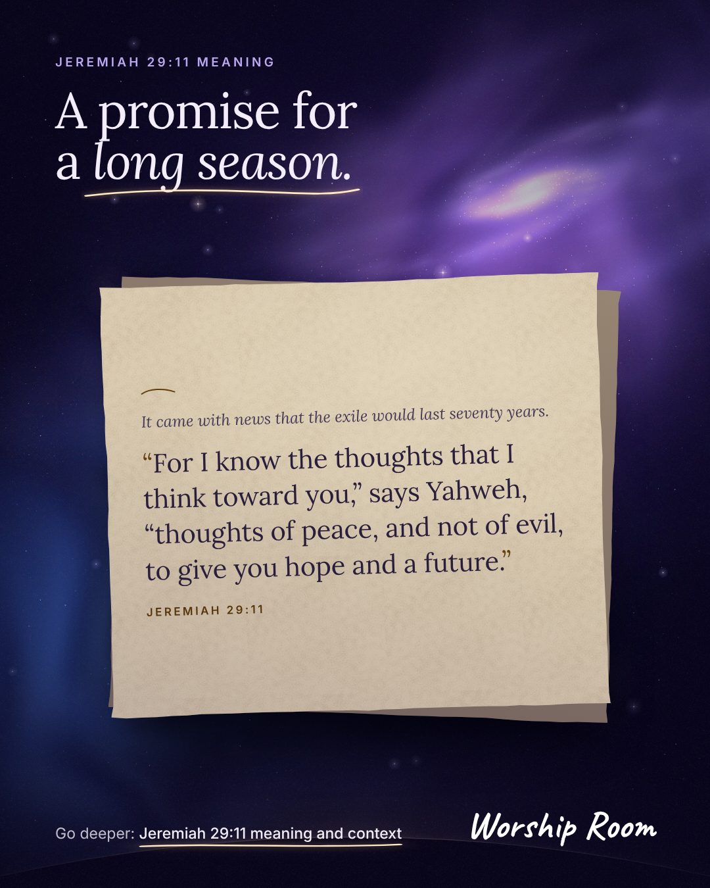

purpose
save
experiment
ig-feed-format · arm image
caption
What does Jeremiah 29:11 really mean? Jeremiah 29:11: “For I know the thoughts that I think toward you,” says Yahweh, “thoughts of peace, and not of evil, to give you hope and a future.”
It was first written to exiles in Babylon, and it came with news that the exile would last seventy years. It doesn’t promise quick relief; it reveals God’s good intentions for His people, even in a long, hard season. Save this for a season of waiting.
Jeremiah 29:11 in context, from Worship Room: worshiproom.com/guides/jeremiah-29-11-meaning
#jeremiah2911 #bibleverse #hope #advent
It was first written to exiles in Babylon, and it came with news that the exile would last seventy years. It doesn’t promise quick relief; it reveals God’s good intentions for His people, even in a long, hard season. Save this for a season of waiting.
Jeremiah 29:11 in context, from Worship Room: worshiproom.com/guides/jeremiah-29-11-meaning
#jeremiah2911 #bibleverse #hope #advent
alt
Verse image on a deep purple galaxy background. Label: Jeremiah 29:11 meaning. Heading: A promise for a long season. On a parchment card: It came with news that the exile would last seventy years. “For I know the thoughts that I think toward you,” says Yahweh, “thoughts of peace, and not of evil, to give you hope and a future.” Jeremiah 29:11. Footer: Go deeper: Jeremiah 29:11 meaning and context. Worship Room, worshiproom.com.
guide
https://worshiproom.com/guides/jeremiah-29-11-meaning